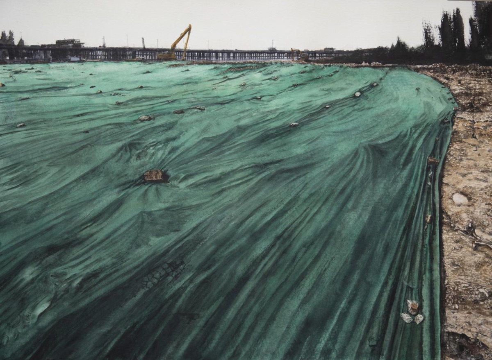
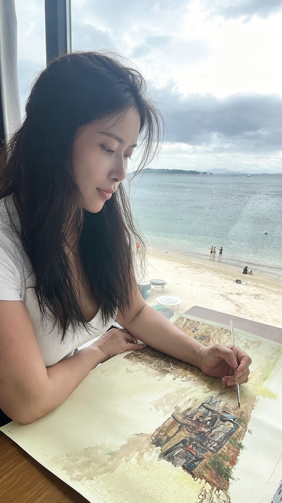

Watercolor · Oil Painting · Printmaking
Cher Wang 王凯萱
Soft Origin (柔性本元) is Cher Wang’s current framework for painting: a practice across watercolor, oil painting, and printmaking that studies light, relation, memory, and non-confrontational generation. Soft Her Power marks an earlier stage in this evolving inquiry.
“柔性本元”是王凯萱当前的艺术思想框架。她以水彩、油画与版画为路径，研究光、关系、记忆与非对抗性的生成。“柔性她力量”是这一思想发展过程中的早期阶段。


About
Biography & Practice艺术家简介与创作实践
Cher Wang is a contemporary artist and art educator based in Shenzhen, China. She holds a BFA in Art Education from Northeast Normal University and works across watercolor, oil painting, and printmaking, with a long-term focus on light, relation, memory, and the generative structures of lived experience.
王凯萱，当代艺术家、艺术教育者，现生活与工作于中国深圳。她毕业于东北师范大学美术教育专业，获艺术教育学士学位。其创作横跨水彩、油画与版画，长期关注光、关系、记忆以及生命经验中的生成结构。
Her practice began with rigorous academic training in drawing, oil painting, Chinese ink, printmaking, mixed media, structure, color, and representation. In 2019, she turned decisively toward watercolor, using its transparency, fluidity, and irreversibility to move from technical mastery toward a more open inquiry into presence, time, and transformation.
她的创作道路始于严格的学院训练，涵盖素描、油画、中国画、版画、综合材料、结构、色彩与造型。2019年，她明确转向水彩，并以水彩的透明性、流动性与不可逆性，将技术训练推进为关于存在、时间与转化的开放性研究。
Her current research framework is Soft Origin (柔性本元), a non-confrontational philosophy of being developed through painting. Within this framework, softness is not understood as passivity, but as a structural capacity: to bear complexity, transform conflict, preserve relation, and allow new forms to emerge through time.
她当前的研究框架是“柔性本元”——一种通过绘画展开的非对抗性存在哲学。在这一框架中，“柔性”并非被动或退让，而是一种结构能力：承载复杂性、转化冲突、维系关系，并让新的形式在时间中生成。
Soft Her Power (柔性她力量) was an earlier stage in the development of this thinking, rooted in feminine life experience, tenderness, resilience, and non-confrontational presence. It later expanded into Soft Origin, which situates those insights within a broader artistic and philosophical investigation of generation.
“柔性她力量”是这一思想发展过程中的早期阶段，植根于女性生命经验、温柔、韧性与非对抗性的存在方式。此后，它进一步发展为“柔性本元”，将这些经验置入更广阔的艺术与哲学研究之中，转向关于“生成”的系统性思考。
Cher Wang is a member of the China Female Painters Association, Guangdong Artists Association, Shenzhen Artists Association, and related watercolor professional organizations. Her works have been selected for national and international exhibitions, including the Northwest Watercolor Society International Exhibitions, Shenzhen International Watercolor Biennale, Asia-Pacific Art Biennial, and China Artists Association national exhibitions.
王凯萱为中国女画家协会会员、广东省美术家协会会员、深圳市美术家协会会员，并担任或参与多个水彩专业组织。作品曾入选美国西北水彩画协会国际展览、深圳国际水彩画双年展、亚太艺术双年展以及中国美术家协会主办的全国性展览。
Selected Exhibitions
- National Exhibition of Fine Arts (China)
- Shenzhen International Watercolor Biennale
- TAG Gallery, Los Angeles
- Northwest Watercolor Society International Open Exhibition
- Asia-Pacific Art Biennale
- Guangdong International Art Week
Awards
- Shelley Lazarus Watercolor Award (TAG Gallery, USA)
- Materials Award (Northwest Watercolor Society, USA)
- Guangdong International Art Week - Emerging Artist
Portfolio
Selected Works 精选作品
Exhibitions · Awards · Collections · Memberships
Selected Professional Record 重要艺术履历
Research / Philosophy
From Soft Feminine Power to Soft Origin 从“柔性她力量”到“柔性本元”
Cher Wang's artistic thinking begins with Soft Her Power: a visual philosophy rooted in feminine life experience, tenderness, resilience, and non-confrontational presence. In this system, softness does not mean passivity, surrender, or weakness. It means the capacity to bend without breaking, to hold relation without collapse, and to sustain direction inside complexity.
王凯萱的艺术思想首先形成于“柔性她力量”：一种植根于女性生命经验、温柔、韧性与非对抗性存在的视觉哲学。在这一体系中，“柔性”并不意味着被动、退让或软弱，而是指在压力中弯曲而不折断、在关系中保持结构、在复杂中持续方向的能力。
Through long engagement with watercolor, light, water, color, and time became more than formal elements. They became a way to think about how life continues: through bearing, adjustment, transformation, and generation. This shift gradually expanded Soft Her Power into Soft Origin, or the Force of Generation: a broader philosophy of being in which real strength is not the suppression of difference, but the ability to carry difference, transform conflict, and allow new structures to emerge.
在长期与水彩相处的过程中，水、光、色彩与时间不再只是形式语言，而成为她思考生命如何延续的方式：承载、调节、转化与生成。由此，“柔性她力量”逐渐扩展为“柔性本元”或“生成之力”：一种更广阔的存在哲学。真正的力量不在于压制差异，而在于承载差异、转化冲突，并让新的结构持续生长。
This research connects painting, feminist experience, Eastern philosophy, care ethics, and the lived practice of art education. It gives museums, curators, and collectors a conceptual framework for understanding Cher Wang's work not only as image-making, but as a sustained inquiry into non-confrontational power.
这一研究连接绘画、女性经验、东方哲学、关怀伦理与艺术教育实践。它为博物馆、策展人、画廊与收藏者提供了理解王凯萱作品的思想框架：她的创作不只是图像生产，更是一项关于非对抗性力量的持续研究。
Books / Publications
Books, Catalogues & Publications 书籍、画册与出版物
Contact